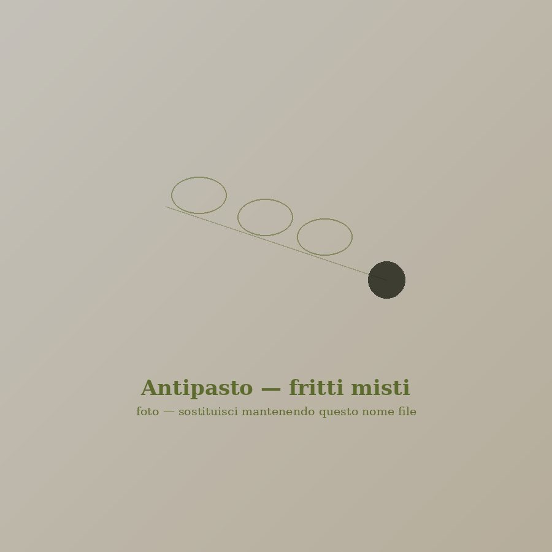
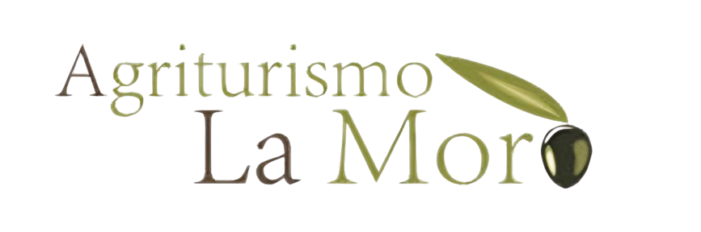
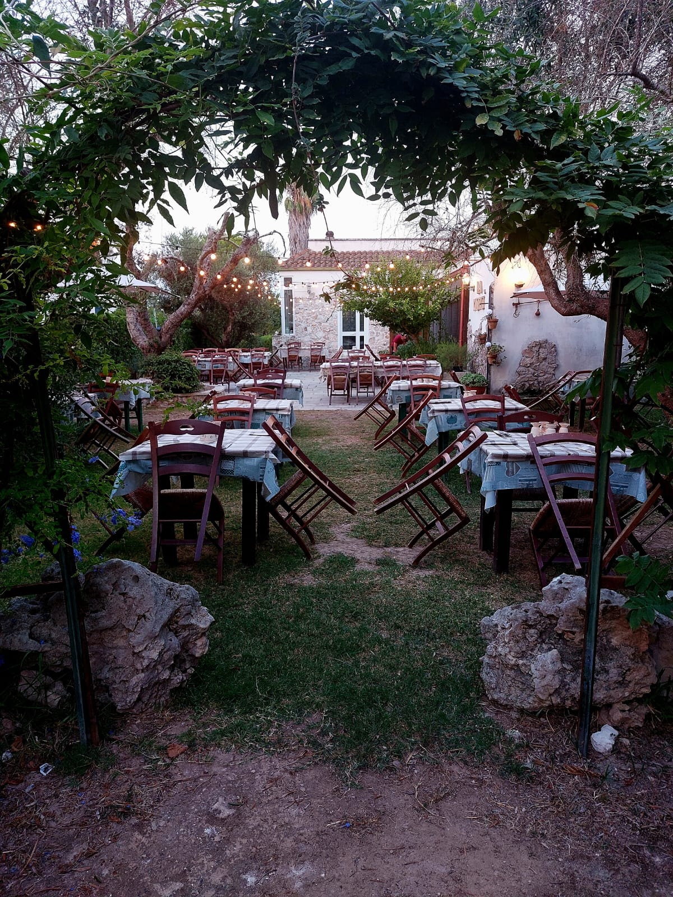
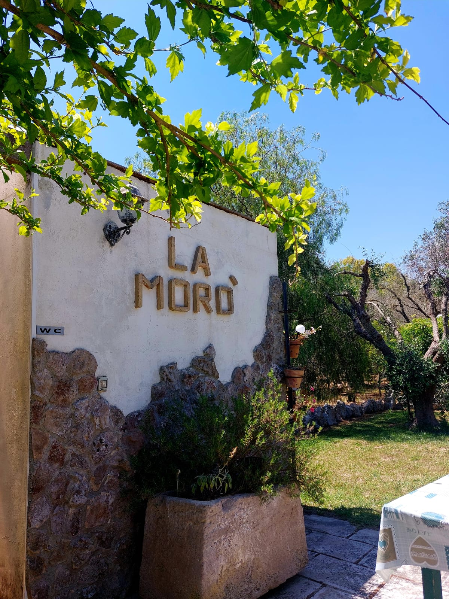
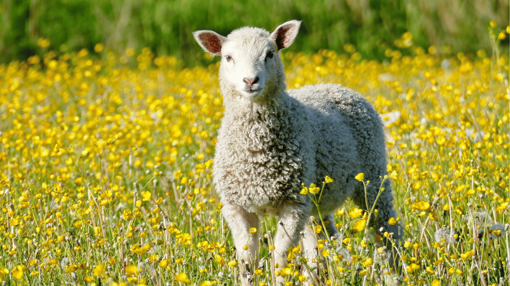
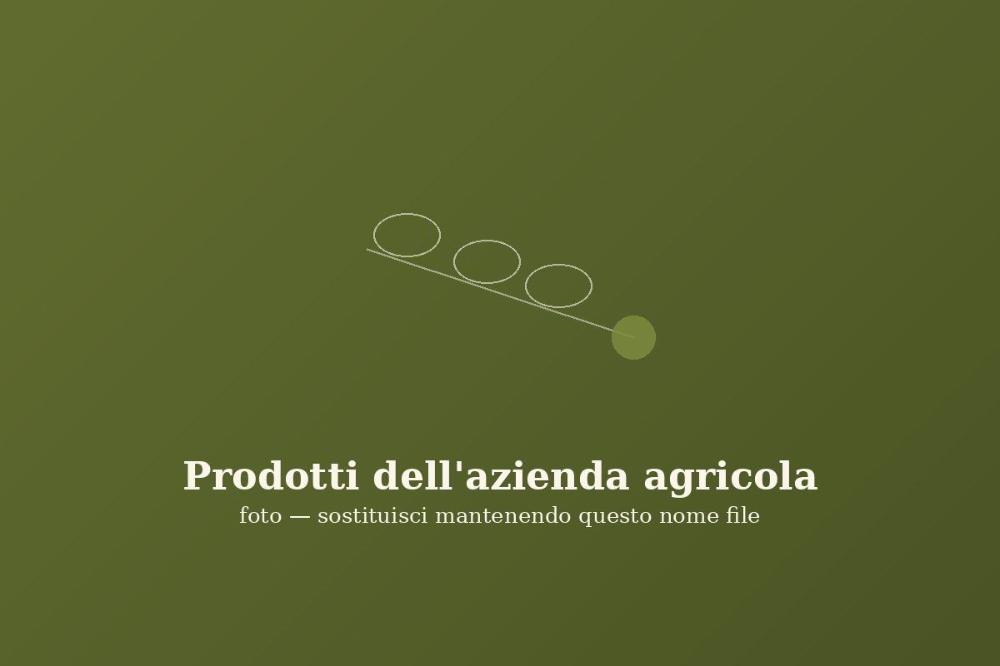
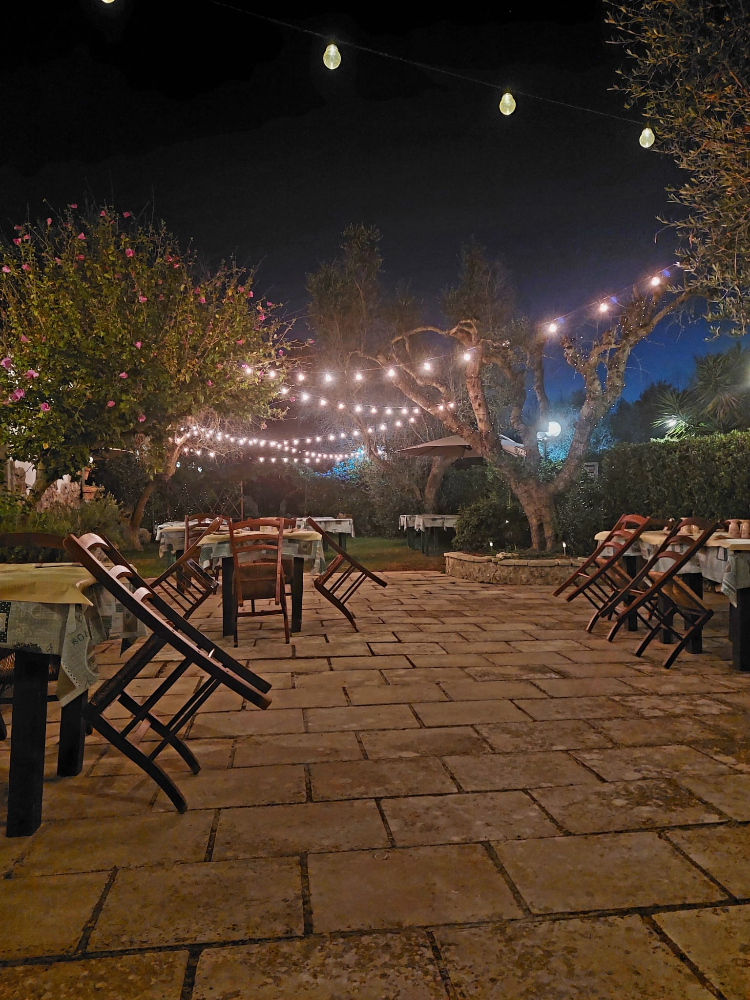
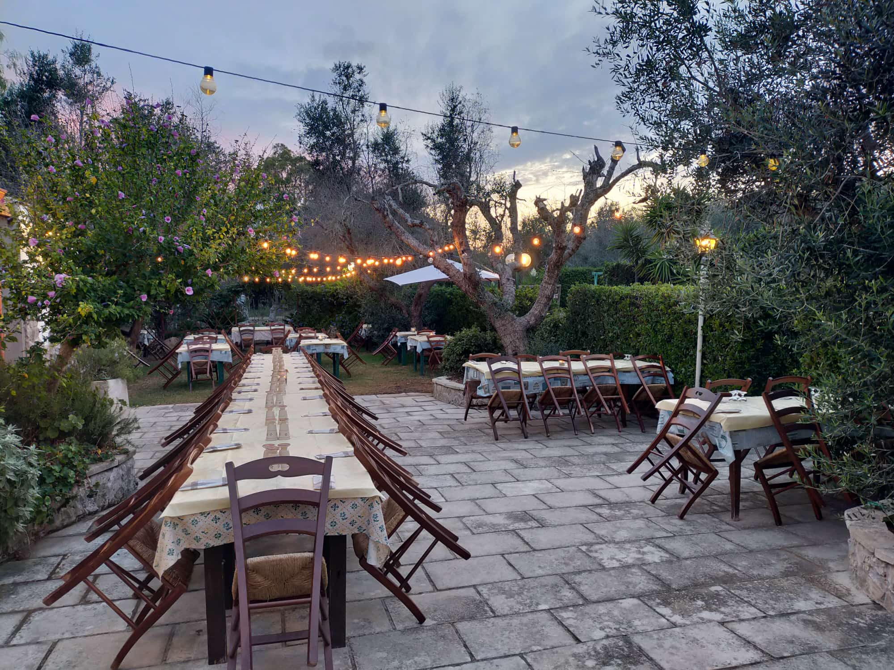

Antipasti
Fritti misti
Pittule, crocchette di patate, polpette di melanzane e panzerotti, dorati al momento.


Frassanito · Otranto · Salento
Cucina salentina genuina, tra gli ulivi di Frassanito

Chi siamo
Da anni l'Agriturismo La Morò custodisce un angolo di campagna salentina immerso nel verde, a due passi da Otranto. Non un semplice ristorante, ma un'azienda agricola che vive di stagioni, raccolti e tradizione: le verdure che portiamo in tavola nascono nei nostri campi, e la cucina segue il ritmo lento della terra.
La nostra filosofia è semplice: genuinità della materia prima, rispetto della tradizione salentina, accoglienza sincera.
Siamo aperti tutte le sere, da giugno a settembre, per la cena, nella nostra sala interna o, nei mesi estivi, all'aperto tra gli ulivi. Prenotazione gradita.
Sotto prenotazione
Da richiedere 24h prima · porzioni minime 4

€ 15,00 a porzione

Punto vendita
Accanto al ristorante, l'Agriturismo La Morò propone un punto vendita di prodotti agricoli coltivati direttamente nella nostra azienda. Verdure di stagione, conserve, prodotti tipici: la stessa genuinità che trovate nei nostri piatti, da portare a casa.
L'ambiente
L'Agriturismo La Morò sorge in località Frassanito, nella campagna di Otranto: un ampio giardino tra ulivi secolari, un'atmosfera semplice, familiare, senza pretese. Una sala accogliente per le serate più fresche e un ampio spazio all'aperto nei mesi estivi. I nostri amici a quattro zampe sono i benvenuti.


Come trovarci